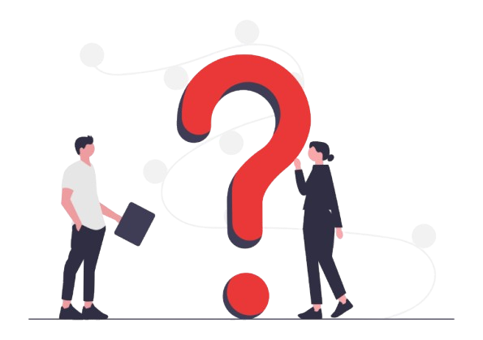
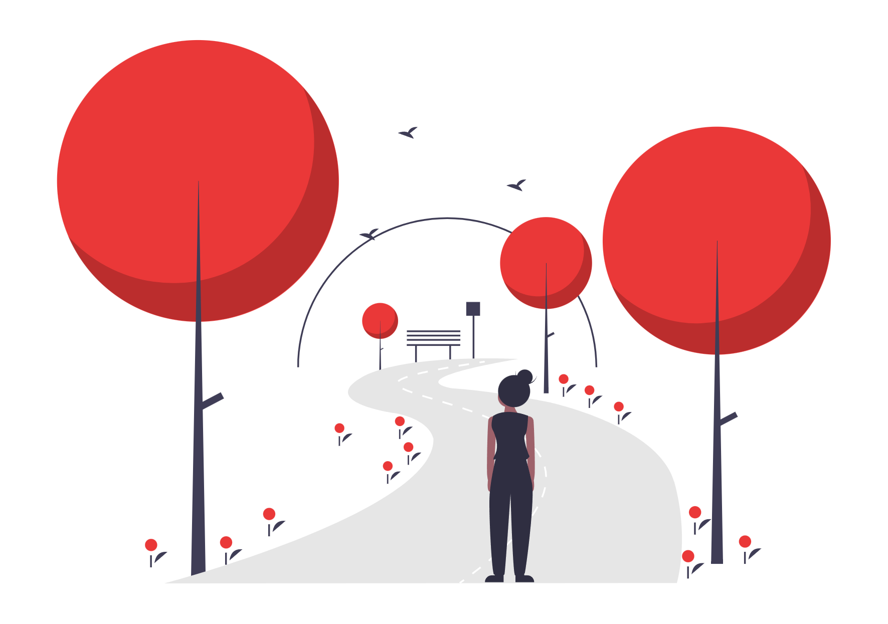
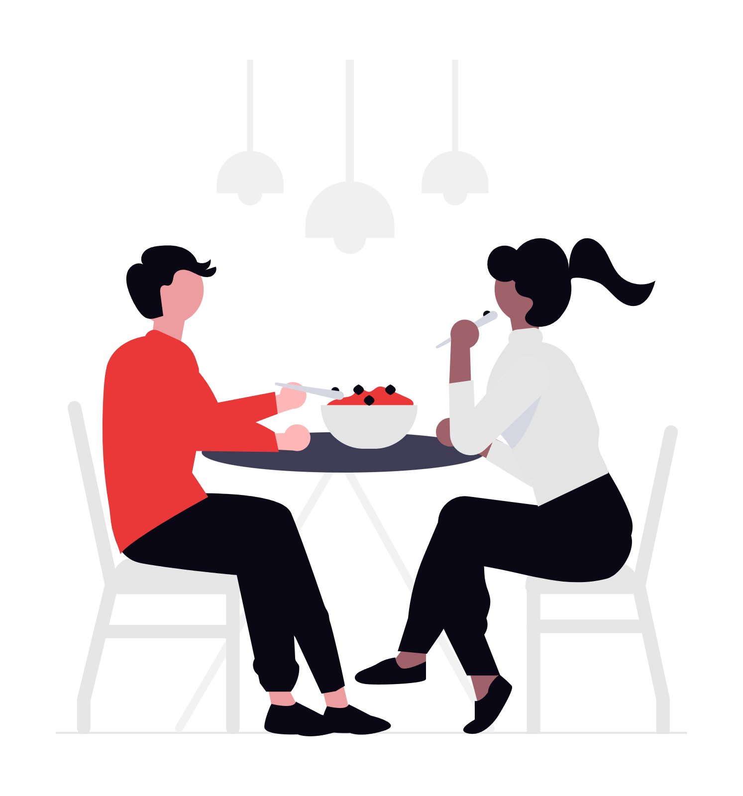

Anim aute id magna aliqua ad ad non deserunt sunt. Qui irure qui lorem cupidatat commodo. Elit sunt amet fugiat veniam occaecat.

O que você tá mais a fim de fazer comigo no final de semana?

Qual horário você tem disponível pra gente sair?
Qual o clima que você quer pro nosso rolê?
Prefere algo mais fechado ou ao ar livre?
Quer que eu monte o plano completo ou prefere dar o toque final?